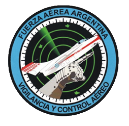

Vigilancia y Control Aéreo (V.Y.C.A.)
Personal que tiene la capacitación para ejecutar los procedimientos de detección e identificación de móviles aéreos y demás actividades que implican las tareas de vigilancia y control aeroespacial.
Escuela
Desde su creacion el V.I.C.A. formo anualemente personal so solo tecnico, para el mantenimiento y reparacion de sus equipos, sino tambien operativo para que realizara las tareas que le corresponden de las operaciones de Defensa Aérea ya sea con referencia a los "Centro de Poder" o bien en los Sistemas de "Control Aerotactico" que se integra a nivel Teatro de Operaciones.
En sus aulas se preparo y se capacito a personal de la Fuerza Aerea Argentina y Extranjera.
Sus gabinete modernamente equipados para la ralizacion de trabajos practicos y Examen, han peritido lograr personal altamente especializado en Informaticos y/o Electronicos
Emblema V.Y.C.A
El emblema del "V.Y.C.A" representa en primer plano una manopla como expresion de la accion de control y direccion por parte de un sistema "Vigilancia y Control Aéreo". Siguiendo esa direccion, bajo ese control la silueta de un avion de caza interceptora. Por ultimo la pantalla de un equipo de radar con sus ecos y su dinamica electronica.
¿Qué hacemos para vigilar?
El Comando Conjunto Aeroespacial vigila de forma permanente el espacio aéreo Argentino utilizando sensores que poseen distinta performance y de última generación conformando un sistema
Todas esas capacidades integradas le permiten al Centro de Operaciones Aeroespaciales como sitio neurálgico que conduce las operaciones de defensa aeroespacial, verificar que el tráfico aéreo que circula en el ámbito de jurisdicción nacional respete la normativa vigente. Aquella aeronave que no cumpla el protocolo establecido adquiere la condición de Tránsito Aéreo Irregular (TAI).
Nuestro organismo realiza estas tareas en estrecha coordinación con las Fuerzas de Seguridad, la Administración Nacional de Aviación Civil (ANAC) y la Empresa Argentina de Navegación Aérea (EANA) conformando de este modo un equipo sólido orientado a fortalecer la seguridad operacional de la aviación general